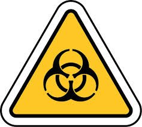
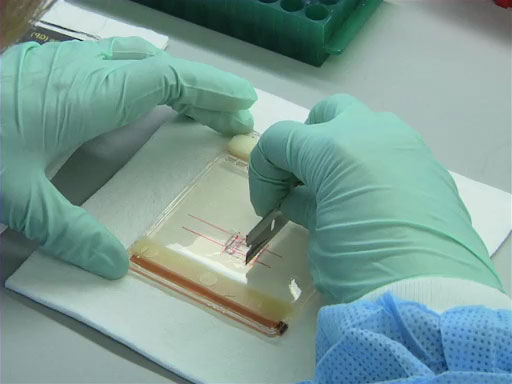

<div class="container">
    <div class="row">
        <div class="col-md-4">
            <nav>
                <ul>
                    <li><a href="#" title="Nach Hause">Le risque biologique</a></li>
                    <li class="sub">
                        <input type="checkbox" />
                        <a href="#">Signalisation du risque biologique</a>


                        <ul class="submenu">
                            <li class="sub">
                                <input type="checkbox" />
                                <a href="#">Les effets sur la santé</a>

                            </li>
                            <li class="sub">
                                <input type="checkbox" />
                                <a href="#">Les différentes natures d’agents biologiques</a>

                            </li>
                            <li class="sub">
                                <input type="checkbox" />
                                <a href="#">L’exposition au risque biologique</a>
                                <ul class="submenu">
                                    <li class="sub">
                                        <input type="checkbox" />
                                        <a href="#">Le premier maillon est le réservoir contenant l’agent biologique.</a>
                                    </li>
                                    <li class="sub">
                                        <input type="checkbox" />
                                        <a href="#">Le deuxième maillon concerne les voies de pénétration dans l’organisme propres à l’agent biologique.</a>
                                    </li>
                                    <li class="sub">
                                        <input type="checkbox" />
                                        <a href="#">Le dernier maillon de la chaîne : L'hôte</a>
                                    </li>
                                </ul>
                            </li>

                        </ul>
                    </li>


                    <li class="sub">
                        <input type="checkbox" />
                        <a href="#">La prévention du risque biologique</a>


                        <ul class="submenu">
                            <li class="sub">
                                <input type="checkbox" />
                                <a href="#">Identifier le réservoir</a>

                            </li>
                            <li class="sub">
                                <input type="checkbox" />
                                <a href="#">Identifier les tâches, procédés ou équipements susceptibles de générer une exposition du travailleur</a>

                            </li>
                            <li class="sub">
                                <input type="checkbox" />
                                <a href="#">Hiérarchiser, supprimer ou réduire les risques biologiques.</a>

                            </li>
                        </ul>

                    </li>
                    <li class="sub">
                        <input type="checkbox" />
                        <a href="#">La législation sur le risque biologique</a>


                        <ul class="submenu">
                            <li class="sub">
                                <input type="checkbox" />
                                <a href="#">Une formation renforcée</a>

                            </li>
                            <li class="sub">
                                <input type="checkbox" />
                                <a href="#">Un suivi médical</a>

                            </li>
                            <li class="sub">
                                <input type="checkbox" />
                                <a href="#">Travaux interdits aux femmes enceintes</a>

                            </li>
                            <li class="sub">
                                <input type="checkbox" />
                                <a href="#">Jeunes travailleurs</a>
                            </li>

                            <li class="sub">
                                <input type="checkbox" />
                                <a href="#">Mesures de prévention particulières pour certaines activités</a>
                            </li>

                            <li class="sub">
                                <input type="checkbox" />
                                <a href="#">Protection des travailleurs en contact avec des objets perforants</a>
                            </li>
                        </ul>
                    </li>
                    <li class="sub">
                        <input type="checkbox" />
                        <a href="#">Documents annexes</a>


                        <ul class="submenu">
                            <li class="sub">
                                <input type="checkbox" />
                                <a href="#"> La réglementation sur la prévention du risque biologique et la protection des personnes</a>

                            </li>

                            <li class="sub">
                                <input type="checkbox" />
                                <a href="#">La réglementation sur les agents pathogènes biologiques</a>

                            </li>

                        </ul>
                    </li>

                </ul>
            </nav>


        </div>


        <div class="col-md-8">
            <h2 class="p-4 m-3">Le risque biologique</h2>
            <article>
                <div class="text-center">
                    
                    <figcaption class="figure-caption"><b>Fig 1.</b> Le risque biologique</figcaption>
                </div>
                <section id="One">
                    La plupart des agents biologiques sont inoffensifs pour l’homme. Certains sont même utilisés pour la production de produits alimentaires (pain, fromages, …) et dans les biotechnologies (production de vaccins, d’anticorps, …). Cependant d’autres agents
                    biologiques peuvent être à l’origine de maladies plus ou moins graves chez l’homme. Être exposé à ces agents sur le lieu de travail devient source de risque lorsque ces agents sont pathogènes. Certains salariés les connaissent, les
                    utilisant de façon délibérée, les risques sont alors bien identifiés (laboratoire de recherche biologique, industrie pharmaceutique ..); cependant d'autres secteurs y sont potentiellement exposés sans vraiment pouvoir les identifier
                    du fait qu’ils ne sont pas utilisés de manière délibérée (hôpitaux , milieux de soins..) ou qu’ils sont parfois mal connus (méconnaissance de la pathogénicité de certains agents).
                </section>

                <section id="outline">

                    <h5>La signalisation du risque biologique</h5>
                    <ol class="outt">
                        <li>Les effets sur la santé</li>
                        <li>Les différentes natures d’agents biologiques</li>
                        <li>L’exposition au risque biologique</li>
                    </ol>
                    <ol class="outt">
                        <h5>La prévention du risque biologique</h5>
                        <li>Identifier le réservoir</li>
                        <li>Identifier les tâches, procédés ou équipements susceptibles de générer une exposition du travailleur</li>
                        <li>Hiérarchiser, supprimer ou réduire les risques biologiques.</li>
                    </ol>

                    <h5>La législation sur le risque biologique</h5>
                    <ol class="outt">
                        <li>Une formation renforcée</li>
                        <li>Un suivi médical</li>
                        <li>Travaux interdits aux femmes enceintes</li>
                        <li>Jeunes travailleurs</li>
                        <li>Mesures de prévention particulières pour certaines activités</li>
                        <li>Protection des travailleurs en contact avec des objets perforants</li>
                    </ol>

                    <h5>Documents annexes</h5>

                </section>


                <ol type="A">
                    <section id="A">
                        <li class="UpperAlpha">La signalisation du risque biologique</li>
                        <p> Les agents biologiques pathogènes et/ou organisme génétiquement modifié (OGM) doivent être clairement identifiés et listés à l’entrée des laboratoires (L2/L3/L4) où ils sont utilisés.</p>

                        <p>En cas d’une possible exposition à un agent biologique identifié, l’affichage d’une signalisation devient obligatoire, en particulier dans tout laboratoire à partir de niveau de confinement 2.</p>

                        <p>Le risque biologique est signalé par un pictogramme de forme triangulaire sur fond jaune.</p>

                        <div class="text-center">
                            
                            <figcaption class="figure-caption"><b>Fig 2.</b> Pictogramme du risque biologique</figcaption>
                        </div>

                        <ol type="1" class="number-List">
                            <li>Les effets sur la santé</li>
                            <p>Les effets sur la santé sont très variables, ils dépendent notamment de l’agent biologique en cause, des conditions d’exposition et de certains facteurs individuels.</p>
                            <p> Quatre types de répercussion peuvent être listées :</p>
                            <ul type="disc" class="bullet-List">
                                <li>Des infections qui sont dues à la pénétration et la multiplication d’un agent biologique dans le corps.</li>
                                <li>Des allergies ou des réactions d’hypersensibilité qui sont liées à une défense immunitaire de l’hôte trop importante.</li>
                                <li>Des toxicités dues à des toxines qui peuvent être libérées par certains agents biologiques.</li>
                                <li>Des maladies chroniques telles que les cancers.</li>
                            </ul>
                            <li>Les différentes natures d’agents biologiques</li>
                            <p>
                                Le décret n°94-352 du 4 mai 1994 (mettre un lien) définit les agents biologiques ainsi que leur classement en quatre groupes selon leur dangerosité. Il fixe des mesures d’évaluation et de prévention du risque biologique ainsi que diverses dispositions
                                concernant la formation, l’information et la surveillance médicale des travailleurs exposés aux agents biologiques pathogènes.</p>
                            <p> Selon ce décret, les agents biologiques pathogènes regroupent les micro-organismes, y compris les micro-organismes génétiquement modifiés, les cultures cellulaires, les prions et les endoparasites humains susceptibles de provoquer
                                une infection, une allergie ou une intoxication.</p>
                            <p> Les micro-organismes sont la plus importante catégorie. Ils comprennent les bactéries, les virus, les parasites et les champignons microscopiques.</p>
                            <p> Les micro-organismes génétiquement modifiés sont des organismes vivants dont le matériel génétique a été modifié en laboratoire.</p>
                            <p>Les agents biologiques sont classés en quatre groupes en fonction du facteur croissant de risque d’infection qu’ils représentent pour l’homme. Les agents des groupes 2, 3 et 4 sont considérés comme pathogènes.</p>
                            <p> L’évaluation des risques résultant à leur exposition est effectuée sur la base des critères suivants : la pathogénicité chez l’homme, le danger pour les travailleurs, les possibilités de propagation dans la collectivité et
                                l’existence d’une prophylaxie (prévention technique ou médicale) ou d’un traitement efficace.</p>

                            <div id="no-more-tables">
                                <table class="col-md-12 table-bordered table-striped table-condensed cf">
                                    <thead class="cf">
                                        <tr>
                                            <th>Groupe de classification</th>
                                            <th>Groupe 1</th>
                                            <th>Groupe 2</th>
                                            <th>Groupe 3</th>
                                            <th>Groupe 4</th>
                                        </tr>
                                    </thead>
                                    <tbody>
                                        <tr>
                                            <td data-title="Groupe de classification">Pathogénicité pour l’Homme</td>
                                            <td data-title="Groupe 1">Non</td>
                                            <td data-title="Groupe 2">Oui</td>
                                            <td data-title="Groupe 3">Oui</td>
                                            <td data-title="Groupe 4">Oui</td>

                                        </tr>
                                        <tr>
                                            <td data-title="Groupe de classification">Danger pour les manipulateurs</td>
                                            <td data-title="Groupe 1">-</td>
                                            <td data-title="Groupe 2">Oui</td>
                                            <td data-title="Groupe 3">Oui</td>
                                            <td data-title="Groupe 4">Oui</td>

                                        </tr>
                                        <tr>
                                            <td data-title="Groupe de classification">Propagation dans la collectivité</td>
                                            <td data-title="Groupe 1">-</td>
                                            <td data-title="Groupe 2">Peu probable</td>
                                            <td data-title="Groupe 3">Possible</td>
                                            <td data-title="Groupe 4">Elevée</td>

                                        </tr>
                                        <tr>
                                            <td data-title="Groupe de classification">Existence d’une prophylaxie et/ou traitement efficace</td>
                                            <td data-title="Groupe 1">-</td>
                                            <td data-title="Groupe 2">Oui</td>
                                            <td data-title="Groupe 3">Oui</td>
                                            <td data-title="Groupe 4">Non</td>

                                        </tr>

                                    </tbody>
                                </table>
                            </div>

                            <p id="group1"> Le groupe 1 comprend les agents biologiques non susceptibles de provoquer une maladie chez l’homme.</p>
                            <p> Le groupe 2 comprend les agents biologiques pouvant provoquer une maladie chez l’homme et constituer un danger pour les travailleurs; leur propagation dans la collectivité est peu probable; il existe une prophylaxie ou un traitement
                                efficace.
                            </p>
                            <p> Le groupe 3 comprend les agents pouvant provoquer une maladie grave chez l’homme et constituer un danger sérieux pour les manipulateurs; leur propagation dans la communauté est possible mais il existe généralement une prophylaxie
                                ou un traitement efficace.</p>
                            <p> Le groupe 4 comprend les agents biologiques qui provoquent des maladies graves chez l’homme et un danger sérieux pour les manipulateurs; le risque de propagation dans la collectivité est élevé; il n’existe ni prophylaxie, ni
                                traitement efficace.
                            </p>

                            <li>L’exposition au risque biologique</li>
                            <p>Quel que soit le domaine concerné, l’exposition aux agents biologiques s’inscrit dans une chaîne de transmission qui s’articule autour de 3 maillons :</p>
                            <ol type="1">
                                <li>Le premier maillon est le réservoir contenant l’agent biologique.</li>
                                <p>Les effets sur la santé sont très variables, ils dépendent notamment de l’agent biologique en cause, des conditions d’exposition et de certains facteurs individuels. Quatre types de répercussion peuvent être listées :</p>
                                <p>Il existe des réservoirs où l’agent biologique est connu et des réservoirs où il n’est pas clairement identifié.</p>
                                <ul type="disc">
                                    <li id="subtitle">Le réservoir de l’agent biologique est connu</li>
                                    <p>Cette situation est la plus simple puisque souvent c’est l’agent pathogène qui est la source du travail. Le réservoir est donc clairement identifiable : exemple d’un laboratoire de recherche sur un agent biologique,
                                        ou d’un laboratoire d’analyse médicale traitant des échantillons provenant d’une personne infectée.</p>
                                    <p>Attention même si un agent biologique est bien identifié, le réservoir est parfois susceptible de contenir d’autres agents biologiques pathogènes, par exemple ’un patient atteint de tuberculose pulmonaire peut également
                                        être porteur du virus de l’immunodéficience humaine (VIH).</p>
                                    <li id="subtitle">Le réservoir de l’agent biologique n’est pas identifié</li>
                                    <p>Dans la plupart des cas, il est difficile de savoir précisément quel(s) agent(s) biologique(s) contient le réservoir. Il est cependant possible d’avoir des suspicions grâce aux données de la littérature et sur la présence
                                        de facteurs favorisant le développement de certains agents biologiques.</p>
                                </ul>
                                <li>Le deuxième maillon concerne les voies de pénétration dans l’organisme propres à l’agent biologique.</li>
                                <p>Trois voies d'exposition sont possibles :</p>
                                <ul type="disc">
                                    <li id="sub">
                                        La voie aérienne : Elle représente la principale voie d’entrée. Elle se fait par exemple par inhalation d’aérosols créés au cours des manipulations.
                                    </li>
                                    <li id="sub">
                                        La voie digestive : Elle se fait principalement par le port des mains ou d’objets contaminés à la bouche.

                                    </li>
                                    <li id="sub">
                                        La voie cutanée ou oculaire : Elle peut se faire par projection dans l’œil, ou par contact sur une peau saine ou lésée, mais aussi suite à une piqûre, coupure avec un objet contaminé, morsure ou griffure. L’utilisation de certains produits chimiques comme
                                        le DMSO facilite le passage par la peau.
                                    </li>
                                </ul>
                                <li>Le dernier maillon de la chaîne : L'hôte </li>
                                <p>L’hôte peut être le manipulateur du pathogène mais pas seulement. D’autres personnes travaillant dans le même local de confinement ainsi que le personnel de maintenance et d'entretien, peuvent être exposées. En cas de contamination
                                    ou d’événement indésirable mal géré, ils pourront développer la maladie si l'exposition est suffisamment importante et s’ils ne sont pas correctement protégés. L’état de santé de l’hôte joue également un rôle majeur
                                    dans le risque de contamination.
                                </p>
                            </ol>
                        </ol>
                        <div class="text-center">
                            
                            <figcaption class="figure-caption">Fig.3 L’exposition au risque biologique</figcaption>
                        </div>
                    </section>


                    <section id="B">


                        <li class="UpperAlpha">La prévention du risque biologique</li>
                        <p>Prévenir un risque, c’est d’abord identifier le danger et savoir apprécier le niveau d’exposition. Lorsque les risques biologiques ne sont pas bien établis, il conviendra d’appliquer le principe de précaution.</p>
                        <p> L’arrêté du 16 juillet 2007 (mettre un lien) fixe les mesures de prévention, notamment de confinement, à mettre en œuvre dans les domaines où les travailleurs sont susceptibles d’être exposés à des agents biologiques pathogènes.</p>
                        <p>L’essentiel de la prévention consiste à éviter la pénétration des agents biologiques dans l’organisme humain et leur dispersion sur le lieu de travail et dans l’environnement en respectant des gestes et les règles de confinement
                            adaptés et en inactivant les déchets.
                        </p>
                        <p> La démarche de prévention des risques repose sur le principe de la rupture de la chaîne de transmission des agents biologiques, en intervenant sur un ou plusieurs maillons le plus en amont possible.</p>
                        <p> Cette démarche consiste notamment à évaluer les risques, les supprimer ou les réduire par des mesures générales de prévention ou des mesures particulières à certaines activités, à informer et former les travailleurs, et à assurer
                            le suivi individuel de l’état de santé des salariés.</p>
                        <p> Comment mettre en oeuvre la démarche de prévention ?</p>
                        <ol type="1">
                            <li>Identifier le réservoir</li>
                            <p>Dans certaines situations de travail, le repérage des réservoirs est relativement facile puisque l’agent pathogène est lui-même utilisé à des fins d’études (échantillons biologiques en laboratoire, malade pris en charge à l’hôpital,
                                …).
                            </p>
                            <p>Dans les autres cas, où l’agent n’est pas clairement identifié, il faut s’appuyer sur les données rapportant les agents biologiques les plus probables ou les maladies les plus fréquemment rencontrées dans un type d’activité,
                                la présence d’un milieu favorable au développement d’agents biologiques (humidité, matières organiques, température).</p>
                            <p id="und">Pour aider à identifier le réservoir et la nature du risque biologique, les questions à se poser sont :</p>
                            <ul type="circle">
                                <li>Quelles sont la nature et l’origine du ou des agents biologiques pathogènes identifiés ?</li>
                                <li>Quel est son groupe de confinement ? </li>
                                <li>Existe-t-il un traitement efficace ?</li>
                            </ul>

                            <li>Identifier les tâches, procédés ou équipements susceptibles de générer une exposition du travailleur</li>
                            <p>Pour qu’il y ait exposition, il faut que les agents biologiques puissent sortir du réservoir ou que le manipulateur soit en contact avec ce réservoir. Examiner si la contamination est possible (i) par voie aérienne, (ii) par
                                contact avec la peau ou les muqueuses, (iii) par inoculation accidentelle, ou (iv) par voie digestive. Pour certaines maladies infectieuses ou parasitaires, il suffit parfois d’une brève exposition pour être contaminé.
                                A l’inverse pour d’autres, c’est la répétition de l’exposition qui installe la maladie. </p>
                            <p id="und">Pour aider à apprécier les voies d’exposition les questions à se poser sont :</p>
                            <ul type="circle">
                                <li>Quelles sont les voies de contamination possible connues ?</li>
                                <li>Quelle est la durée de l’exposition et la fréquence ?</li>
                                <li>Quelle est la quantité manipulée et quelle est la dose minimale infectieuse ?</li>
                            </ul>
                            <li>Hiérarchiser, supprimer ou réduire les risques biologiques.</li>
                            <p>Une fois réalisée l’identification des situations dangereuses liées à un type d’activité, il convient, pour chacune d’entre elles, de tenir compte de la gravité des dommages potentiels et d’estimer la probabilité d’apparition.
                                Cela permet de hiérarchiser afin de déterminer les risques à supprimer et de mettre en place les mesures de prévention de façon prioritaire. </p>
                            <p id="und">Pour aider à bien apprécier et prévenir les risques biologiques, les questions suivantes sont à poser : </p>
                            <ul type="circle">
                                <li>Existe-t- il une possibilité de substitution ?</li>
                                <li>Quels sont les équipements de protection collective et individuelle à mettre en place pour réduire les risques ?
                                </li>
                                <li>Peut-on réduire encore l’exposition et optimiser les modes opératoires ?</li>
                                <li>Le personnel a-t-il l’expérience et l’habilitation nécessaires ?</li>
                                <li>Le personnel a-t-il pleinement conscience des risques et a-t-il reçu les formations indispensables ?</li>
                                <li>D’autres personnes peuvent-elles être exposées ? </li>
                            </ul>
                            <p id="red">Si au terme de ces 3 étapes le risque est encore trop grand pour le personnel exposé, le travail ne doit pas être maintenu.</p>
                        </ol>
                        <div class="text-center">
                            
                            <figcaption class="figure-caption">Fig.4 Textes généraux ministere du travail</figcaption>
                        </div>
                    </section>
                    <section id="C">


                        <li class="UpperAlpha">La législation sur le risque biologique</li>
                        <p>Les travailleurs exposés à des agents biologiques doivent être informés et formés sur les risques pour la santé et les prescriptions en matière d'hygiène, sur les précautions à prendre pour éviter l'exposition, sur le port et l'utilisation
                            des équipements et des vêtements de protection individuelle, sur les modalités de tri, de collecte, de stockage, de transport et d'élimination des déchets, sur les mesures à prendre pour prévenir ou pallier les incidents et
                            sur la procédure à suivre en cas d'accident. </p>
                        <ol type="1">
                            <li>Une formation renforcée</li>
                            <p id="ref">Référence : Article R. 231-63 du Code du Travail</p>
                            <p>Une formation doit être dispensée avant que le personnel n’exerce une activité impliquant un contact avec les agents biologiques. Cette formation à la sécurité concerne :</p>
                            <ul type="disc">
                                <li>Les risques pour la santé et les prescriptions en matière d’hygiène</li>
                                <li>Les précautions à prendre pour éviter l’exposition (bonnes pratiques de laboratoire, utilisation des protections collectives, …) et pour prévenir les incidents et les accidents (cahier de laboratoire, procédures de travail,
                                    consignes, …)</li>
                                <li>Le port et l’utilisation des équipements et des vêtements de protection individuelle adaptés</li>
                                <li>Les modalités de tri, de collecte, de stockage, de transport et d’élimination des déchets</li>
                                <li>La conduite à tenir en cas d’accident.</li>
                            </ul>
                            <p>La formation à la sécurité doit être répétée régulièrement et adaptée à l’évolution des risques.
                            </p>
                            <p>De plus, des formations et des équipements spécifiques à certains postes de travail sont également obligatoires (travail sur certains agents biologiques hautement pathogènes, expérimentation animale, …).</p>
                            <li>Un suivi médical</li>
                            <p id="ref">Références : Articles R. 4426-1 à R. 4426-13 du Code du Travail</p>
                            <p>Un dossier médical spécial doit être tenu par le médecin du travail pour chaque personne susceptible d'être exposée à des agents biologiques pathogènes. Ce dossier est établi, soit à la suite de la visite d’information et de
                                prévention, soit à la suite de l’examen médical d’aptitude d’embauche. Il est conservé pendant dix ans à compter de la cessation de l'exposition.</p>
                            <p>Toutefois, lorsque les agents biologiques sont susceptibles de provoquer des maladies présentant une longue période d'incubation, le dossier médical spécial est conservé pendant une période plus longue, pouvant atteindre quarante
                                ans après la cessation de l'exposition connue.</p>
                            <p>Lorsque l'entreprise disparaît ou lorsque l'agent change d'entreprise, le dossier médical spécial est transmis soit au médecin du travail de la nouvelle entreprise, soit au médecin inspecteur du travail, à charge pour celui-ci
                                de l'adresser au médecin du travail désormais compétent. </p>
                            <p>En complément des vaccinations prévues par le Code de la santé publique, l'employeur peut recommander, au regard de l’évaluation des risques et sur proposition du médecin du travail, au personnel non immunisé contre les agents
                                biologiques pathogènes auxquels il est exposé de réaliser, à sa charge, les vaccinations appropriées.</p>
                            <p>Le médecin du travail doit être informé par l'employeur des décès et des absences pour cause de maladie des travailleurs exposés à des agents biologiques pathogènes, en fonction de la nature des activités exercées et des conditions
                                d'exposition aux agents biologiques.</p>
                            <p>Lorsqu'il s'avère qu'un travailleur est atteint d'une infection ou d'une maladie inscrite dans un tableau de maladie professionnelle et/ou pouvant résulter d'une exposition à des agents biologiques, tous les travailleurs susceptibles
                                d'avoir été exposés sur le même lieu de travail font l'objet d'un examen médical, assorti éventuellement d'examens complémentaires.</p>
                            <p>Si l'infection ou la maladie n'est pas inscrite dans un tableau de maladies professionnelles, le médecin du travail peut proposer aux autres travailleurs ayant subi une exposition analogue de bénéficier d'une surveillance médicale.
                                Une nouvelle évaluation du risque d'exposition est en outre réalisée.</p>
                            <li>Travaux interdits aux femmes enceintes</li>
                            <p id="ref">Références : Articles D. 4152-3 / L.1225-7 / L1225-12 / L1225-14 / R1225-4 du Code du Travail
                            </p>
                            <p>Le Code du travail interdit d’exposer au virus de la rubéole ou à la toxoplasmose les femmes enceintes qui ne sont pas immunisées. Seule une étude de poste au cas par cas peut permettre de répondre à la question du maintien
                                au poste de travail. Si les risques pour la grossesse ne peuvent être contrôlés par une prévention collective renforcée par une prévention individuelle, un changement de poste temporaire peut être envisagé.
                            </p>
                            <p>
                                S’il n’est pas possible de proposer aux femmes enceintes un autre emploi, le contrat de travail est suspendu jusqu’à la date du début de congé de maternité et une garantie de rémunération leur est versée pendant cette période de suspension.
                            </p>
                            <li>Jeunes travailleurs </li>
                            <p id="ref">Références : Articles D. 4153-19 / D. 4153-37 du Code du Travail
                            </p>
                            <p>Il est par ailleurs interdit d’affecter les jeunes âgés de moins de 18 ans à des travaux les exposant aux agents biologiques des groupes 3 ou 4, à l’abattage, l’euthanasie et l’équarrissage d’animaux et à des travaux les mettant
                                en contact d’animaux féroces ou venimeux.</p>
                            <p>Toutefois, certains travaux, bien qu’interdits aux jeunes travailleurs, peuvent faire l'objet de dérogations, après déclaration auprès de l'inspecteur du travail.</p>
                            <li>Mesures de prévention particulières pour certaines activités</li>
                            <ul type="disc">
                                <li id="und">Dispositions relatives aux travaux en contact avec des animaux</li>
                                <p id="ref">Références : Articles R. 4424-7 / D.4424-8 du Code du Travail</p>
                                <p>Le Code du travail prévoit des mesures de protection qui comprennent notamment une information sur les procédés de décontamination et de désinfection et la mise en œuvre de procédés pour manipuler et éliminer sans risque
                                    les déchets contaminés. Un arrêté visant le risque de transmission des zoonoses définit les mesures de prévention (conception des installations, choix des matériels, moyens d’hygiène et pratiques de travail). Ces mesures
                                    s’appliquent aux établissements employant des travailleurs susceptibles d’être en contact avec des animaux domestiques ou des animaux sauvages (apprivoisés, tenus en captivité ou libres) vivants ou morts, ou des déchets
                                    contaminés.
                                </p>
                                <li id="und">Dispositions spécifiques aux laboratoires et biotechnologies</li>
                                <p id="ref">Références : Articles R. 4424-9 / R.4424-10 du Code du Travail</p>
                                <p>Des mesures de confinement appropriées au résultat de l’évaluation des risques s’appliquent dans les salles dédiées aux activités techniques des laboratoires et autres locaux.</p>
                                <p>Un arrêté précise les mesures techniques de prévention (notamment de confinement) à mettre en œuvre dans les laboratoires de recherche, d’enseignement, d’analyses, d’anatomie et cytologie pathologiques, les salles d’autopsie
                                    et les établissements industriels et agricoles où les travailleurs sont susceptibles d’être exposés à des agents biologiques pathogènes.</p>

                            </ul>
                            <li>Protection des travailleurs en contact avec des objets perforants</li>
                            <p id="ref">Références : Articles R. 4424-11 du Code du Travail</p>
                            <p>En application de l’article R. 4424-11 du Code du travail, un arrêté prévoit des mesures de prévention des blessures et des risques de contamination par des agents biologiques pathogènes pour les travailleurs susceptibles d’être
                                en contact avec des objets perforants dans les établissements de soins.</p>
                            <p>Cet arrêté précise les catégories d’établissements et les services concernés, les règles applicables en matière d’information et de formation des travailleurs et de prise en charge du travailleur blessé.</p>

                        </ol>
                    </section>
                    <section id="D">


                        <li class="UpperAlpha">Documents annexes</li>
                        <ul type="disc">
                            <li>Documents annexes : La réglementation sur la prévention du risque biologique et la protection des personnes</li>


                            <p>Arrêté du 1er août 2007 fixant les modalités de suivi sérologique des personnes victimes d’accidents du travail entraînant un risque de contamination par le virus de l’immunodéficience humaine.</p>
                            <p>Arrêté du 16 juillet 2007 fixant les mesures techniques de prévention, notamment de confinement, à mettre en œuvre dans les laboratoires de recherche, d’enseignement, d’analyses, d’anatomie et cytologie pathologiques, les salles
                                d’autopsie et les établissements industriels et agricoles où les travailleurs sont susceptibles d’être exposés à des agents biologiques pathogènes.</p>
                            <p>Circulaire DGS/SD5C/DHOS/E2/DRT/CT 1/CT 2 n° 2004-382 du 30 juillet 2004 relative aux précautions à observer dans les services d’anatomie et cytologie pathologiques, les salles d’autopsie, les chambres mortuaires et les laboratoires
                                de biologie « spécialisés ATNC », vis-à-vis du risque de transmission des agents transmissibles conventionnels (ATC) et non conventionnels (ATNC).</p>
                            <p>Circulaire DGS/5C/DHOS/E2 du 14 mars 2001 relative aux précautions à observer lors de soins en vue de réduire les risques de transmission d’agents transmissibles non conventionnels.</p>
                            <p>Directive 2000/54/CE du Parlement européen et du Conseil du 18 septembre 2000 concernant la protection des travailleurs contre les risques liés à l’exposition à des agents biologiques au travail.</p>
                            <p>Arrêté du 30 juin 1998 modifiant l’arrêté du 18 juillet 1994 modifié fixant la liste des agents biologiques pathogènes.</p>
                            <p>Arrêté du 17 avril 1997 modifiant l’arrêté du 18 juillet 1994 fixant la liste des agents biologiques pathogènes.</p>
                            <p>Décret n° 96-364 du 30 avril 1996 relatif à la protection des travailleuses enceintes ou allaitant contre les risques résultant de leur exposition à des agents chimiques, biologiques et physiques et modifiant notamment le code
                                du travai</p>
                            <p>Circulaire DGS/DH n° 100 du 11 décembre 1995 concernant les précautions à observer en milieu chirurgical et anatomopathologique face aux risques de transmission de la maladie de Creutzfeldt-Jakob.</p>
                            <p>Arrêté du 18 juillet 1994 fixant la liste des agents biologiques pathogènes. Décret n° 94-352 du 4 mai 1994 relatif à la protection des travailleurs contre les risques résultant de leur exposition à des agents biologiques et
                                modifiant le code du travail.</p>
                            <p>
                                Directive 90/679/CEE du Conseil, du 26 novembre 1990, concernant la protection des travailleurs contre les risques liés à l’exposition à des agents biologiques au travail.</p>
                            <li>Documents annexes : La réglementation sur les agents pathogènes biologiques</li>
                        </ul>
                        <p>Arrêté du 6 novembre 2014 modifiant l’arrêté du 30 avril 2012 fixant la liste des micro-organismes et toxines prévue à l’article L. 5139-1 du code de la santé publique.</p>
                        <p>Arrêté du 11 juin 2013 modifiant l’arrêté du 23 janvier 2013 relatif aux règles de bonnes pratiques tendant à garantir la sécurité et la sûreté biologiques mentionnées à l’article R. 5139-18 du code de la santé publique.</p>
                        <p>Arrêté du 23 janvier 2013 relatif aux règles de bonnes pratiques tendant à garantir la sécurité et la sûreté biologiques mentionnées à l’article R. 5139-18 du code de la santé publique.</p>
                        <p>Arrêté du 30 avril 2012 fixant la liste des micro-organismes et toxines prévue à l’article L. 5139-1 du code de la santé publique</p>
                        <p>Arrêté du 17 mars 2011 relatif aux compétences et qualifications dont le titulaire de l’autorisation mentionnée à l’article R. 5139-1 du code de la santé publique justifie pour lui-même ainsi que pour les personnes qu’il habilite
                            pour contribuer sous sa responsabilité aux opérations faisant l’objet de cette autorisation</p>
                        <p>Décision du 20 octobre 2010 fixant le contenu du dossier technique mentionné à l’article R. 5139-3 et accompagnant la demande d’autorisation prévue à l’article R. 5139-1 du code de la santé publique.</p>
                        <p>Arrêté du 30 juin 2010 fixant les renseignements qui figurent dans le registre ou les enregistrements mentionnés à l’article R. 5139-17 du code de la santé publique, notamment les modalités de leur tenue et les informations qu’ils
                            contiennent.
                        </p>
                        <p>Arrêté du 30 juin 2010 fixant les renseignements qui figurent sur l’autorisation mentionnée à l’article R. 5139-1 du code de la santé publique.</p>
                        <p>Arrêté du 30 juin 2010 fixant les mentions qui figurent sur les états annuels des stocks prévus à l’article R. 5139-14 du code de la santé publique. Décret n° 2010-736 du 30 juin 2010 relatif aux micro-organismes et toxines</p>
                        <p>Arrêté du 5 mars 2013 portant création d’un traitement automatisé de données à caractère personnel relatif à la dématérialisation des procédures d’agrément ou de déclaration des projets d’utilisation d’organismes génétiquement
                            modifiés en milieu confiné à des fins d’enseignement, de recherche et de développement prévues par les dispositions du chapitre II du titre III du livre V de la partie réglementaire du code de l’environnement</p>
                        <p>Arrêté du 28 mars 2012 relatif au dossier technique demandé pour les utilisations confinées d’organismes génétiquement modifiés prévu aux articles R. 532-6, R. 532-14 et R. 532-26 du code de l’environnement.</p>
                        <p>Décret n° 2011-1177 du 23 septembre 2011 relatif à l’utilisation confinée d’organismes génétiquement modifiés.Décret n° 2011-1177 du 23 septembre 2011 relatif à l’utilisation confinée d’organismes génétiquement modifiés.</p>
                        <p>Directive 2009/41/ce du parlement européen et du conseil du 6 mai 2009 relative à l’utilisation confinée de micro-organismes génétiquement modifiés</p>
                        <p>Décret n° 2007-357 du 19 mars 2007 modifiant le décret n° 93-774 du 27 mars 1993 fixant la liste des techniques de modification génétique et les critères de classement des organismes génétiquement modifiés.</p>
                        <p>Décret n° 98-18 du 8 janvier 1998 modifiant le décret n° 93-774 du 27 mars 1993 fixant la liste des techniques de modification génétique et les critères de classement des organismes génétiquement modifiés.</p>
                        <p>Circulaire du 16 avril 1996 relative aux utilisations confinées d’organismes génétiquement modifiés à des fins de recherche, de développement ou d’enseignement.</p>
                        <p>Décret n° 93-774 du 27 mars 1993 fixant la liste des techniques de modification génétique et les critères de classement des organismes génétiquement modifiés (OGM).</p>
                    </section>
                </ol>


            </article>


        </div>
    </div>
</div>